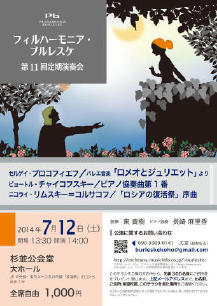

フィルハーモニア・ブルレスケ
第１１回定期演奏会にご来場頂き誠に有難うございました。次回、第１２回定期演奏会は２０１５年７月１１日（土）練馬文化センター大ホールに決定致しました。お誘い合わせの上、是非ご来場下さい。
2014シーズンのプログラムは、リムスキー=コルサコフの「ロシアの復活祭」序曲に始まり、
協奏曲にはシェフと同じパリ国立高等音楽院出身のピアニスト長崎麻里香さんを迎えたチャイコフスキーのピアノ協奏曲を、
同じくパリを拠点に活動していたロシアの作曲家、セルゲイ･プロコフィエフのバレエ音楽「ロミオとジュリエット」をメインとする、オールロシアプログラムです！
第11回定期演奏会
2014年7月12日(土)
於：杉並公会堂 大ホール
セルゲイ･プロコフィエフ／ バレエ音楽「ロミオとジュリエット」より
ピョートル･チャイコフスキー／ ピアノ協奏曲第１番
ニコライ･リムスキー=コルサコフ／ 「ロシアの復活祭」序曲
ピアノ独奏：長崎麻里香（http://marikanagasaki.com）
指揮：東貴樹
入場料：1000円 全席自由

新着情報
- 第１２回定期演奏会の日程情報をUPしました。(2014.7.17)
- 第１１回定期演奏会のフライヤーをUPしました。(2014.4.13)
- 第１０回記念演奏会のフライヤーをUPしました。(2013.4.28)
- トップページを更新しました。(2013.2.16)
- トップページを更新しました。(2012.7.14)
- アーカイブ（第9回）を更新しました。(2012.7.14)
- トップページを更新しました。(2012.5.31)
- アーカイブ（第8回）を更新しました。(2012.2.1)
管理人：加嶋稔（かしま・みのる）
E-Mail： minorukashima@jcom.home.ne.jp
このホームページは、クラシック音楽情報センター(http://www.musicinfo.com) より、サーバーの無償使用の提供を受けています